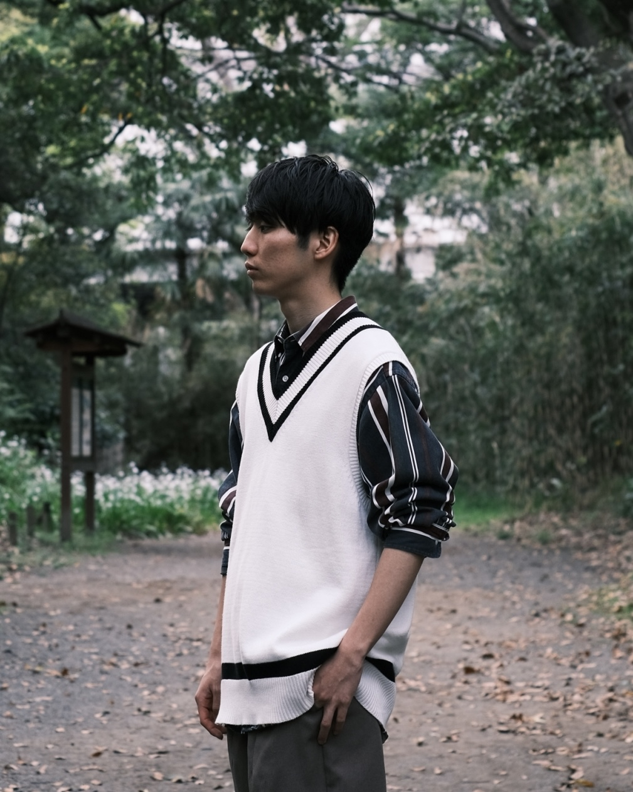
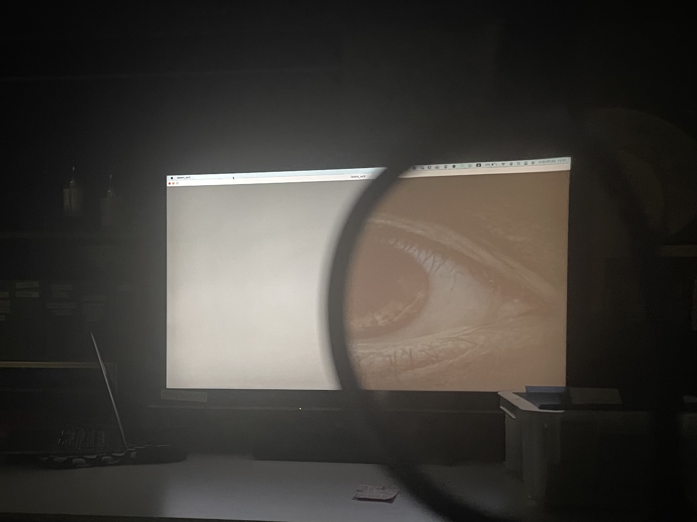
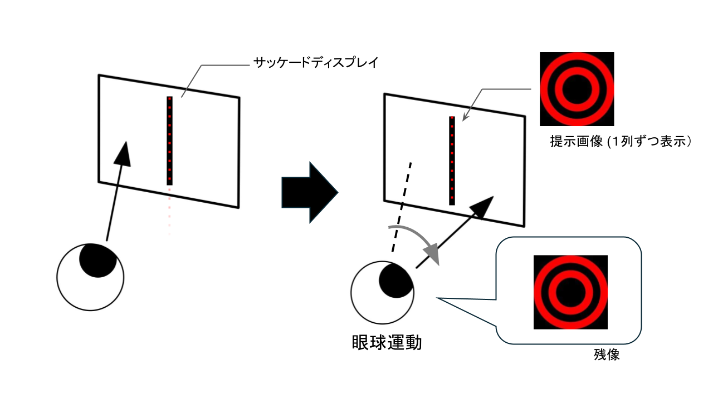

<!DOCTYPE html>
<html lang="ja">
<head>
  <meta charset="UTF-8" />
  <meta name="viewport" content="width=device-width, initial-scale=1.0" />
  <title>Suzuki Yuki Portfolio</title>

  <!-- ========================================
       External Libraries
       ======================================== -->
  <script src="https://cdn.tailwindcss.com"></script>
  <link rel="preconnect" href="https://fonts.googleapis.com" />
  <link rel="preconnect" href="https://fonts.gstatic.com" crossorigin />
  <link href="https://fonts.googleapis.com/css2?family=Noto+Sans+JP:wght@100;200;300;400;500;600;700&display=swap" rel="stylesheet" />
  <script crossorigin src="https://unpkg.com/react@18/umd/react.production.min.js"></script>
  <script crossorigin src="https://unpkg.com/react-dom@18/umd/react-dom.production.min.js"></script>
  <script src="https://unpkg.com/@babel/standalone/babel.min.js"></script>

  <!-- ========================================
       Global Styles
       ======================================== -->
  <style>
    /* Reset */
    *, *::before, *::after {
      box-sizing: border-box;
      margin: 0;
      padding: 0;
    }

    /* Base */
    html { scroll-behavior: smooth; }
    body { font-family: 'Noto Sans JP', sans-serif; }
    ::selection { background: #1e3a5f; color: #fff; }

    /* Animations */
    @keyframes fadeIn {
      from { opacity: 0; }
      to   { opacity: 1; }
    }
    @keyframes slideTop {
      from { transform: translateY(-8px); opacity: 0; }
      to   { transform: translateY(0);    opacity: 1; }
    }
    @keyframes slideBtm {
      from { transform: translateY(16px); opacity: 0; }
      to   { transform: translateY(0);    opacity: 1; }
    }
    .af  { animation: fadeIn   .7s ease-out both; }
    .aff { animation: fadeIn   .5s ease-out both; }
    .ast { animation: slideTop .2s ease-out both; }
    .asb { animation: slideBtm .7s ease-out both; }

    /* Cat walking animation (fixed to bottom of viewport, left → right) */
    @keyframes catwalk {
      0%   { right: -120px; }
      100% { right: 100%; }
    }
    .cat-walker {
      position: fixed;
      bottom: 0;
      height: 96px;
      width: auto;
      pointer-events: auto;
      cursor: pointer;
      z-index: 1000;
      animation: catwalk 55s linear infinite;
    }

    /* Scrollbar */
    ::-webkit-scrollbar       { width: 6px; }
    ::-webkit-scrollbar-track { background: transparent; }
    ::-webkit-scrollbar-thumb { background: #d1d5db; border-radius: 3px; }

    /* Utility */
    .text-balance { text-wrap: balance; }
  </style>

  <!-- ========================================
       Tailwind Config
       ======================================== -->
  <script>
    tailwind.config = {
      theme: {
        extend: {
          fontFamily: {
            sans: ['"Noto Sans JP"', 'sans-serif'],
          },
        },
      },
    };
  </script>
</head>
<body>

<div id="root"></div>

<script type="text/babel">
const { useState, useEffect, useRef } = React;


/* ============================================================
   Icon Components
   ============================================================ */

/** Base SVG icon wrapper */
const Icon = ({ d, size = 24, className = '', style = {} }) => (
  <svg
    xmlns="http://www.w3.org/2000/svg"
    width={size}
    height={size}
    viewBox="0 0 24 24"
    fill="none"
    stroke="currentColor"
    strokeWidth="2"
    strokeLinecap="round"
    strokeLinejoin="round"
    className={className}
    style={style}
    dangerouslySetInnerHTML={{ __html: d }}
  />
);

const ChevronDown = ({ size = 14 }) => (
  <Icon size={size} style={{ opacity: 0.5 }} d='<path d="m6 9 6 6 6-6"/>' />
);

const ChevronRight = ({ size = 14, className = '' }) => (
  <Icon size={size} className={className} d='<path d="m9 18 6-6-6-6"/>' />
);

const MenuIcon = () => (
  <Icon d='<line x1="4" x2="20" y1="12" y2="12"/><line x1="4" x2="20" y1="6" y2="6"/><line x1="4" x2="20" y1="18" y2="18"/>' />
);

const CloseIcon = () => (
  <Icon d='<path d="M18 6 6 18"/><path d="m6 6 12 12"/>' />
);

const PlayIcon = ({ className = '' }) => (
  <Icon size={64} className={className} d='<polygon points="6 3 20 12 6 21 6 3"/>' />
);

const ArrowLeft = ({ size = 14 }) => (
  <Icon size={size} d='<path d="m12 19-7-7 7-7"/><path d="M19 12H5"/>' />
);

const ArrowUp = ({ size = 20 }) => (
  <Icon size={size} d='<path d="m5 12 7-7 7 7"/><path d="M12 19V5"/>' />
);

const GradCap = ({ size = 18 }) => (
  <Icon
    size={size}
    d='<path d="M21.42 10.922a1 1 0 0 0-.019-1.838L12.83 5.18a2 2 0 0 0-1.66 0L2.6 9.08a1 1 0 0 0 0 1.832l8.57 3.908a2 2 0 0 0 1.66 0z"/><path d="M22 10v6"/><path d="M6 12.5V16a6 3 0 0 0 12 0v-3.5"/>'
  />
);

const MailIcon = ({ size = 16, className = '' }) => (
  <Icon
    size={size}
    className={className}
    d='<rect width="20" height="16" x="2" y="4" rx="2"/><path d="m22 7-8.97 5.7a1.94 1.94 0 0 1-2.06 0L2 7"/>'
  />
);

const MapPin = ({ size = 16 }) => (
  <Icon
    size={size}
    d='<path d="M20 10c0 4.993-5.539 10.193-7.399 11.799a1 1 0 0 1-1.202 0C9.539 20.193 4 14.993 4 10a8 8 0 0 1 16 0"/><circle cx="12" cy="10" r="3"/>'
  />
);

const ClockIcon = ({ size = 12, className = '' }) => (
  <Icon
    size={size}
    className={className}
    d='<circle cx="12" cy="12" r="10"/><polyline points="12 6 12 12 16 14"/>'
  />
);


/* ============================================================
   Animation Utility Components
   ============================================================ */

/** Fade-in on scroll (IntersectionObserver) */
const FadeIn = ({ children, delay = 0 }) => {
  const [visible, setVisible] = useState(false);
  const ref = useRef();

  useEffect(() => {
    const el = ref.current;
    if (!el) return;

    const observer = new IntersectionObserver(
      (entries) => {
        entries.forEach((entry) => {
          setVisible(entry.isIntersecting);
        });
      },
      { threshold: 0.05 }
    );

    observer.observe(el);
    return () => observer.unobserve(el);
  }, []);

  return (
    <div
      ref={ref}
      className={`transition-all duration-1000 ease-out transform ${
        visible ? 'opacity-100 translate-y-0' : 'opacity-0 translate-y-10'
      }`}
      style={{ transitionDelay: `${delay}ms` }}
    >
      {children}
    </div>
  );
};

/** YouTube URL を embed 形式に変換するヘルパー
 *  youtu.be/xxx → youtube.com/embed/xxx
 *  youtube.com/watch?v=xxx → youtube.com/embed/xxx
 *  既に embed 形式ならそのまま返す
 */
const toEmbedUrl = (url) => {
  if (!url) return '';
  let videoId = '';
  // youtu.be/VIDEO_ID
  const shortMatch = url.match(/youtu\.be\/([^?&#]+)/);
  if (shortMatch) videoId = shortMatch[1];
  // youtube.com/watch?v=VIDEO_ID
  if (!videoId) {
    const longMatch = url.match(/youtube\.com\/watch\?v=([^&#]+)/);
    if (longMatch) videoId = longMatch[1];
  }
  // already embed format — extract ID and rebuild
  if (!videoId) {
    const embedMatch = url.match(/youtube(?:-nocookie)?\.com\/embed\/([^?&#]+)/);
    if (embedMatch) videoId = embedMatch[1];
  }
  if (videoId) {
    // nocookie ドメイン + rel=0 で関連動画を抑制
    return `https://www.youtube-nocookie.com/embed/${videoId}?rel=0`;
  }
  return url;
};

/** Page-level fade-in on mount */
const PageFade = ({ children }) => {
  const [visible, setVisible] = useState(false);

  useEffect(() => {
    setVisible(false);
    const frame = requestAnimationFrame(() => setVisible(true));
    return () => cancelAnimationFrame(frame);
  }, []);

  return (
    <div className={`transition-opacity duration-700 ease-out ${visible ? 'opacity-100' : 'opacity-0'}`}>
      {children}
    </div>
  );
};


/* ============================================================
   Main App Component
   ============================================================ */

const App = () => {
  /* ---- State ---- */
  const [currentPage, setCurrentPage] = useState('home');
  const [isMenuOpen, setIsMenuOpen] = useState(false);
  const [selectedVideoWork, setSelectedVideoWork] = useState(null);
  const [selectedDanceWork, setSelectedDanceWork] = useState(null);
  const [showBackToTop, setShowBackToTop] = useState(false);

  useEffect(() => {
    const handleScroll = () => setShowBackToTop(window.scrollY > 400);
    window.addEventListener('scroll', handleScroll);
    return () => window.removeEventListener('scroll', handleScroll);
  }, []);


  /* ============================================================
     Data: Dance Works
     ============================================================ */
  const danceWorks = [
    {
      id: 'dance-1',
      title: 'pain',
      intent:
        '⼼の脆さ・弱さゆえに引き起こされる苦痛 をテーマに制作した。観客が作品テーマについての当事者意識を感じるにはどうすればよいかという探求の中で、本作品では次のような⼯夫を実験的に⾏った。\n\n①作品内の明確な主⼈公を提⽰し 、主⼈公は歩く・座るなどシンプルな動きを多めにし、かつ感情が⾒えやすい動きを取り⼊れることで、観客の主⼈公への⾃⼰投影を試みる\n②冒頭無音時に突如として観客席から演者が現れることにより、舞台（演者）と客席（観客）が別世界であるという意識を曖昧にし、観客の没⼊感を強化させることを試みる\n③珍しいフォーメーションの動き⽅や、緩急を特に意識して制作することで観客の意識が途切れないよう⼯夫',
      /* ── 動画 ──
         mp4Url: ページ内で再生する短い動画 (20〜30秒, H.264)
         youtubeUrl: YouTubeボタンのリンク先
         mp4は videos/dance/ に配置してください。
      */
      mp4Url: 'videos/dance/pain.mp4',
      youtubeUrl: 'https://youtu.be/avPBZkWXdDI',
      photos: ['images/dance/pain1.jpg', 'images/dance/pain2.jpg', 'images/dance/pain3.jpg'],
    },
    {
      id: 'dance-2',
      title: 'my party',
      intent:
        '学部生時代に所属していたサークルの25周年公演にて上演した作品。当時の感情を総合した時に強く残る「楽しい」という感情をいかに観客に届けられるかを探求しながら制作した。Vaundyのライブにおける熱狂感を参照し、踊り以外の視覚効果を積極的に活用する試みを行なった。照明効果はもちろんのこと、大量の紙吹雪やバズーカ、観客を巻き込んだ掛け声などを演出に取り入れた。結果として、非常に多くの方から好評を得る作品となり、後の目標としていたダンスイベントへの出展に繋がった。',
      mp4Url: 'videos/dance/myparty.mp4',
      youtubeUrl: 'https://www.youtube.com/watch?v=Z6UfUy_GbGA',
      photos: ['images/dance/myparty1.jpeg', 'images/dance/myparty2.jpeg', 'images/dance/myparty3.jpeg'],
    },
    {
      id: 'dance-3',
      title: '続いていく日常の中で…',
      intent:
        '昨年10月に亡くなった愛猫のために、また、私が乗り越えて先に進むために制作した。失う中で続いていく日常に焦点を当て、とある1日の様子を描くつもりで制作した。一日の様子を抽象性と具体性のバランスを調節しながら制作し、観客への本作品の情報提示は、写真を舞台前方に置くだけでの最低限に留めた。しかし鑑賞後の感想から、作品が多くの観客の心に届き、この作品で涙が出たという人が多数いたことがわかった。\n私の最も大切な作品である。',
      mp4Url: 'videos/dance/nichijou.mp4',
      youtubeUrl: 'https://youtu.be/xpl_EDnwncc',
      photos: ['images/dance/mame1.jpg', 'images/dance/mame2.jpg', 'images/dance/mame3.jpg'],
    },
    {
      id: 'dance-4',
      title: '呼吸のように',
      intent:
        '孤独と愛の対比をテーマに制作した。1人で抱えるしかないものがあり、それゆえに孤独を感じるが、誰かにわかってもらいたい・繋がりを求めているような、人間の孤独な姿と、愛を求め生きている姿を描くことを試みた。本作品では、朝井リョウの小説「正欲」を参考図書として作品制作に取り組み、この作品の概念が舞台上に描かれるよう制作した。',
      mp4Url: 'videos/dance/kokyuu.mp4',
      youtubeUrl: 'https://youtu.be/XkLYxgKdb7I',
      photos: ['images/dance/kokyu1.JPG', 'images/dance/kokyu2.JPG', 'images/dance/kokyu3.JPG'],
    },
    {
      id: 'dance-5',
      title: 'No Title',
      intent:
        '本作品ではテーマを定めず、作品の表面的な美しさのみに注力して制作した。表現していることは何もないのにも関わらず、instagramでの再生数が一番多くなっている上に、私の周りにはこの作品を好む人が最も多い。作品テーマをどう表現したら心に響くかを日々模索していることを踏まえると、大変皮肉な話だと思う。',
      mp4Url: 'videos/dance/NoTitle.mp4',
      youtubeUrl: 'https://youtu.be/7_nRR179sQA',
      photos: [],
    },
  ];


  /* ============================================================
     Data: Video / Prototype Works
     ============================================================ */
  const videoWorks = {
    touchdesigner: [
      {
        id: 'td-1',
        title: '再帰反射武器パーティクル',
        summary:
          '大学三年次に研究テーマ候補の一環として制作。\n武器に巻きつけた再帰反射布を遠⾚外線カメラによって認識し、そこからパーティクルが放出される演出をTouchdesignerで実装した。',
        category: 'TouchDesigner',
        /* ── サムネイル画像 ── */
        thumbnail: 'images/prototype/td-particle.png',
        /* ── mp4動画 ──
           videos/prototype/ に配置してください。
           推奨: H.264, 20〜30秒程度
        */
        mp4Url: 'videos/prototype/td-particle.mp4',
      },
      {
        id: 'td-2',
        title: '擬似ライブ視覚体験',
        summary:
          '⼤学三年次のインタラクションデザインという講義の中間課題として制作。\nライブに⾏った時に感じられるような⾳の振動により周囲が振動する場⾯を視覚化し、⾳の感触を視覚的に体験することを試みた。エッジが低⾳の⼤きさに⽐例して左右に動くように設計し、⾃分と周囲が⾳に合わせて振動しているように感じられるようにした。',
        category: 'TouchDesigner',
        /* ── サムネイル画像 ── */
        thumbnail: 'images/prototype/td-vibration.png',
        /* ── mp4動画 ── */
        mp4Url: 'videos/prototype/td-vibration.mp4',
      },
    ],
    /* 注: Kinetic Feedback (td-3) は削除済み */
    blender: [
      {
        id: 'bl-1',
        title: '３Dダンスフォーメーション作成',
        summary:
          'ダンスのフォーメーションを3D空間で視覚化することで出演者が自分の動き方を理解しやすくなることを目指して、Blenderを１から学び3Dフォーメーションを制作した。\n従来は舞台を上から見た平面図のみで共有しているが、それではフォーメーション移行時に誰とすれ違うか、どの幕を通ればよいかといった具体的な導線が把握しづらい。そこで、blenderを用いた3Dフォーメーション制作を試みた。まずBlenderを独学で学び、2〜3週間かけて本番の舞台構造を再現。人型オブジェクトにアニメーションをつけ、フォーメーション移行を3Dで可視化した。自身の作品制作中にその映像を出演者に公開して意見を集めた結果、「移動経路の理解には役立つが、頭で理解できても実際の動きにすぐ反映するのは難しい」「従来の平面図の方が慣れていてわかりやすい」という声があった。また、制作に数日以上かかる点も課題だった。\nこの取り組みから毎練習でフォーメーションを一つずつ確認する従来の方法の有用性を再認識したが、問題解決の発想を形にするために新しい知識を一から習得し、手を動かして検証・改善を重ねた経験は大きな学びとなった。',
        category: 'Blender',
        /* ── サムネイル画像 ── */
        thumbnail: 'images/prototype/bl-formation.png',
        /* ── mp4動画 ── */
        mp4Url: 'videos/prototype/bl-formation.mp4',
      },
      {
        id: 'bl-2',
        title: '3Dダンス作品試作「希望を求めて」',
        summary:
          'ダンス動画からモーションデータを取得すること、３D空間上でダンス作品を作ることに興味があり、⼤学2年次にとりあえず⼿を動かし制作した試作。\nダンス動画から姿勢推定 によってモーションデータを得られる"Plask Motion" というwebサイトを利用し、得たデータをblenderで編集し３Dダンス作品を試みた 。3D上でしかできない身体表現を考えたときに、既存の身体の形に囚われないことが３D上の独自性の一つであると考え、身体の形状変化や分裂などを実験的に取り入れることで新たな体験の創出を目指した。',
        category: 'Blender',
        /* ── サムネイル画像 ── */
        thumbnail: 'images/prototype/bl-kibou.png',
        /* ── mp4動画 ── */
        mp4Url: 'videos/prototype/bl-kibou.mp4',
      },
      {
        id: 'bl-3',
        title: '正夢',
        summary:
          '大学三年次にアニメーション表現という講義の最終課題として制作した作品。⽬が覚めたら謎の⼈間が襲いかかる→それが夢だったという展開を2Dアニメーション→３Dアニメーション→ 実写（ VFX ）で３回繰り返すという内容。3D、実写はいずれもblenderと"Plask Motion" を活⽤しアニメーション制作を⾏った 。現実と仮想世界の融合に興味があり、VFXに挑戦した。',
        category: 'Blender',
        /* ── サムネイル画像 ── */
        thumbnail: 'images/prototype/bl-masayume.png',
        /* ── mp4動画 ── */
        mp4Url: 'videos/prototype/bl-masayume.mp4',
      },
      {
        id: 'bl-4',
        title: 'LINE新商品考案課題',
        summary:
          '大学三年次にインタラクションデザインという講義の最終課題の一部として制作した3D映像。\n課題内容は、教員の選定した企業の新商品をグループで考え、プレゼンするというものであった。我々のグループは株式会社LINEが課題対象として割り当てられ、ホログラムで通話できるデバイスを提案することとした。その中で、After Effectを用いた映像編集に興味を持っていたため、自発的にプロモーションビデオの作成を担当した。blenderによる３Dモデル構築・撮影とAfter Effectによる映像効果によって実装し、他グループが映像制作をあまり行なっていなかったこともあって、プレゼンの説得力に大いに貢献する材料となった。',
        category: 'Blender',
        /* ── サムネイル画像 ── */
        thumbnail: 'images/prototype/Ixd.png',
        /* ── mp4動画 ── */
        mp4Url: 'videos/prototype/Ixd.mp4',
      },
    ],
  };


  /* ============================================================
     Navigation
     ============================================================ */
  const navigateTo = (pageId, sectionId = null, work = null) => {
    setCurrentPage(pageId);
    setIsMenuOpen(false);

    if (pageId === 'video-detail') {
      setSelectedVideoWork(work);
      window.scrollTo(0, 0);
      return;
    }

    if (pageId === 'dance-detail' || (typeof sectionId === 'string' && sectionId.startsWith('dance-'))) {
      setSelectedDanceWork(work || danceWorks.find((d) => d.id === sectionId));
      setCurrentPage('dance-detail');
      window.scrollTo(0, 0);
      return;
    }

    if (sectionId) {
      setTimeout(() => {
        const el = document.getElementById(sectionId);
        if (el) {
          window.scrollTo({
            top: el.getBoundingClientRect().top - document.body.getBoundingClientRect().top - 100,
            behavior: 'smooth',
          });
        }
      }, 100);
    } else {
      window.scrollTo(0, 0);
    }
  };

  const navLinks = [
    { id: 'home', label: 'Home' },
    {
      id: 'dance',
      label: 'Dance',
      subItems: danceWorks.map((d) => ({ id: d.id, label: d.title })),
    },
    {
      id: 'research',
      label: 'Research',
      subItems: [
        { id: 'master', label: '修士研究' },
        { id: 'undergrad', label: '学部研究' },
      ],
    },
    {
      id: 'video',
      label: 'Prototype',
      subItems: [
        { id: 'blender', label: 'Blender' },
        { id: 'touchdesigner', label: 'TouchDesigner' },
      ],
    },
    {
      id: 'event',
      label: 'Event',
      subItems: [
        { id: 'event-1', label: 'Archive No.01 記憶の書庫' },
        { id: 'event-2', label: 'CEP演習' },
      ],
    },
  ];

  const isActive = (id) =>
    currentPage === id ||
    (id === 'video' && currentPage === 'video-detail') ||
    (id === 'dance' && currentPage === 'dance-detail');


  /* ============================================================
     Component: Header
     ============================================================ */
  const Header = () => {
    const [activeDropdown, setActiveDropdown] = useState(null);

    return (
      <header className="fixed top-0 left-0 w-full h-20 bg-transparent z-50 transition-all duration-300">
        <div className="container mx-auto h-full px-6 flex justify-between items-center relative">
          {/* Logo */}
          <button
            onClick={() => navigateTo('home')}
            className="text-lg font-bold tracking-widest lowercase text-gray-900 drop-shadow-sm"
            style={{ WebkitTextStroke: '0.5px white' }}
          >
            suzukiyuki
          </button>

          {/* Desktop Navigation */}
          <nav className="hidden md:flex space-x-8 h-full">
            {navLinks.map((link) => (
              <div
                key={link.id}
                className="relative h-full flex items-center group"
                onMouseEnter={() => setActiveDropdown(link.id)}
                onMouseLeave={() => setActiveDropdown(null)}
              >
                <button
                  onClick={() => navigateTo(link.id)}
                  className={`text-sm tracking-wide transition-all relative py-1 flex items-center gap-1 ${
                    isActive(link.id)
                      ? 'text-blue-900 font-medium'
                      : 'text-gray-500 hover:text-gray-900'
                  }`}
                >
                  {link.label}
                  {link.subItems && <ChevronDown size={14} />}
                  {isActive(link.id) && (
                    <span className="absolute bottom-0 left-0 w-full h-0.5 bg-blue-900"></span>
                  )}
                </button>

                {/* Dropdown */}
                {link.subItems && activeDropdown === link.id && (
                  <div className="absolute top-20 left-1/2 -translate-x-1/2 w-56 bg-white/70 backdrop-blur-xl border border-white/30 shadow-xl py-2 ast">
                    {link.subItems.map((sub) => (
                      <button
                        key={sub.id}
                        onClick={() => navigateTo(link.id, sub.id)}
                        className="w-full text-left px-6 py-3 text-xs text-gray-700 hover:text-blue-900 hover:bg-white/40 transition-colors border-b border-white/20 last:border-0"
                      >
                        {sub.label}
                      </button>
                    ))}
                  </div>
                )}
              </div>
            ))}
          </nav>

          {/* Mobile Menu Toggle */}
          <button className="md:hidden" onClick={() => setIsMenuOpen(!isMenuOpen)}>
            {isMenuOpen ? <CloseIcon /> : <MenuIcon />}
          </button>
        </div>

        {/* Mobile Navigation */}
        {isMenuOpen && (
          <div className="absolute top-20 left-0 w-full bg-white border-b border-gray-100 md:hidden ast max-h-[80vh] overflow-y-auto">
            <div className="flex flex-col p-6 space-y-6">
              {navLinks.map((link) => (
                <div key={link.id}>
                  <button
                    onClick={() => navigateTo(link.id)}
                    className={`text-left text-lg font-light ${
                      currentPage === link.id ? 'text-blue-900 font-bold' : 'text-gray-600'
                    }`}
                  >
                    {link.label}
                  </button>
                  {link.subItems && (
                    <div className="mt-2 ml-4 flex flex-col space-y-2 border-l border-gray-100 pl-4">
                      {link.subItems.map((sub) => (
                        <button
                          key={sub.id}
                          onClick={() => navigateTo(link.id, sub.id)}
                          className="text-left text-sm text-gray-400 hover:text-blue-900"
                        >
                          {sub.label}
                        </button>
                      ))}
                    </div>
                  )}
                </div>
              ))}
            </div>
          </div>
        )}
      </header>
    );
  };


  /* ============================================================
     Component: Footer
     ============================================================ */
  const Footer = () => (
    <footer className="bg-gray-50 border-t border-gray-100 py-16">
      <div className="container mx-auto px-6 text-center">
        <p className="text-sm text-gray-400 tracking-widest uppercase mb-4">
          Suzuki Yuki Portfolio
        </p>
        <p className="text-xs text-gray-400">
          &copy; 2026 Design &amp; Development by Suzuki Yuki. All Rights Reserved.
        </p>
      </div>
    </footer>
  );


  /* ============================================================
     Component: Home Hero (Slideshow)
     ============================================================ */
  const HomeHero = () => {
    const [currentSlide, setCurrentSlide] = useState(0);
    const [scrollOpacity, setScrollOpacity] = useState(1);

    /* スクロールに応じてスローガンをフェードアウト */
    useEffect(() => {
      const handleScroll = () => {
        const fadeStart = 0;
        const fadeEnd = window.innerHeight * 0.6;
        const scrollY = window.scrollY;
        const opacity = Math.max(0, 1 - (scrollY - fadeStart) / (fadeEnd - fadeStart));
        setScrollOpacity(opacity);
      };
      window.addEventListener('scroll', handleScroll, { passive: true });
      return () => window.removeEventListener('scroll', handleScroll);
    }, []);

    const slides = [
      /* ── ヒーロースライド背景動画 ──
         各スライドの背景にダンス作品の .mp4 をループ再生します。
         videos/dance/ フォルダ内の動画を使用しています。
         mp4Url が空の場合はグラデーションのプレースホルダーが表示されます。
         推奨: 1920x1080, H.264, 2〜5MB 程度に圧縮
      */
      { id: 'h-1', page: 'dance-detail', work: danceWorks[0], label: 'Dance Work: pain',             mp4Url: danceWorks[0].mp4Url },
      { id: 'h-2', page: 'dance-detail', work: danceWorks[1], label: 'Dance Work: my party',          mp4Url: danceWorks[1].mp4Url },
      { id: 'h-3', page: 'dance-detail', work: danceWorks[2], label: 'Dance Work: 続いていく日常の中で…', mp4Url: danceWorks[2].mp4Url },
      { id: 'h-4', page: 'dance-detail', work: danceWorks[3], label: 'Dance Work: 呼吸のように',        mp4Url: danceWorks[3].mp4Url },
      { id: 'h-5', page: 'dance-detail', work: danceWorks[4], label: 'Dance Work: No Title',          mp4Url: danceWorks[4].mp4Url },
    ];

    const next = () => setCurrentSlide((p) => (p + 1) % slides.length);
    const prev = () => setCurrentSlide((p) => (p - 1 + slides.length) % slides.length);

    useEffect(() => {
      const timer = setInterval(next, 7000);
      return () => clearInterval(timer);
    }, []);

    /* Touch swipe handling (mobile) */
    const startX = useRef(null);
    const endX = useRef(null);
    const minSwipe = 50;

    const onTouchStart = (e) => { endX.current = null; startX.current = e.targetTouches[0].clientX; };
    const onTouchMove  = (e) => { endX.current = e.targetTouches[0].clientX; };
    const onTouchEnd   = ()  => {
      if (!startX.current || !endX.current) return;
      const diff = startX.current - endX.current;
      if (diff > minSwipe) next();
      if (diff < -minSwipe) prev();
    };

    /* Click on slide → navigate to work page */
    const handleSlideClick = () => {
      navigateTo(slides[currentSlide].page, slides[currentSlide].sectionId, slides[currentSlide].work);
    };

    return (
      <section
        className="relative h-screen w-full flex items-center justify-center overflow-hidden bg-black select-none"
        onTouchStart={onTouchStart}
        onTouchMove={onTouchMove}
        onTouchEnd={onTouchEnd}
      >
        {/* Slide backgrounds */}
        <div className="absolute inset-0 z-0">
          {slides.map((slide, i) => (
            <div
              key={slide.id}
              onClick={handleSlideClick}
              className={`absolute inset-0 transition-opacity duration-[1500ms] ease-in-out cursor-pointer ${
                i === currentSlide
                  ? 'opacity-60 z-10 pointer-events-auto'
                  : 'opacity-0 z-0 pointer-events-none'
              }`}
            >
              {slide.mp4Url ? (
                /* ── mp4 ループ再生 (8〜10秒の短い動画) ── */
                <video
                  src={slide.mp4Url}
                  autoPlay
                  loop
                  muted
                  playsInline
                  className="w-full h-full object-cover pointer-events-none"
                  onCanPlay={(e) => e.currentTarget.play()}
                />
              ) : (
                /* mp4Url が未設定の場合のプレースホルダー */
                <div className="w-full h-full bg-gradient-to-br from-gray-900 to-blue-900 flex items-center justify-center">
                  <span className="text-white/20 text-xs tracking-widest uppercase">Video Placeholder</span>
                </div>
              )}

              {/* Slide label overlay */}
              <div
                className={`absolute bottom-20 right-12 text-right transition-all duration-1000 pointer-events-none ${
                  i === currentSlide ? 'opacity-100 translate-y-0' : 'opacity-0 translate-y-4'
                }`}
                style={{ transitionDelay: '500ms' }}
              >
                <div className="flex items-center justify-end gap-2 text-white/50 mb-1">
                  <span className="text-[10px] tracking-[0.4em] uppercase">Project Detail</span>
                  <ChevronRight size={12} />
                </div>
                <span className="text-lg text-white font-light tracking-widest border-b border-white/20 pb-1 inline-block">
                  {slide.label}
                </span>
              </div>
            </div>
          ))}
        </div>

        {/* Left / Right arrow buttons */}
        <button
          onClick={(e) => { e.stopPropagation(); prev(); }}
          className="absolute left-4 md:left-8 top-1/2 -translate-y-1/2 z-30 p-3 rounded-full bg-white/10 backdrop-blur-sm border border-white/20 text-white/70 hover:bg-white/25 hover:text-white transition-all duration-300"
          aria-label="Previous slide"
        >
          <Icon size={20} d='<path d="m15 18-6-6 6-6"/>' />
        </button>
        <button
          onClick={(e) => { e.stopPropagation(); next(); }}
          className="absolute right-4 md:right-8 top-1/2 -translate-y-1/2 z-30 p-3 rounded-full bg-white/10 backdrop-blur-sm border border-white/20 text-white/70 hover:bg-white/25 hover:text-white transition-all duration-300"
          aria-label="Next slide"
        >
          <Icon size={20} d='<path d="m9 18 6-6-6-6"/>' />
        </button>

        {/* Center tagline — fades out on scroll */}
        <div
          className="relative z-20 text-center px-6 pointer-events-none transition-opacity duration-100"
          style={{ opacity: scrollOpacity }}
        >
          <FadeIn>
            <p className="text-sm md:text-lg text-white/90 font-light tracking-[0.6em] uppercase drop-shadow-lg">
              人生を変える体験の創出を目指して
            </p>
          </FadeIn>
        </div>

        {/* Slide indicators */}
        <div className="absolute bottom-10 left-1/2 -translate-x-1/2 z-30 flex gap-4">
          {slides.map((_, i) => (
            <button
              key={i}
              onClick={(e) => { e.stopPropagation(); setCurrentSlide(i); }}
              className={`h-[1px] transition-all duration-500 ${
                i === currentSlide ? 'w-16 bg-white' : 'w-4 bg-white/20 hover:bg-white/40'
              }`}
            />
          ))}
        </div>
      </section>
    );
  };


  /* ============================================================
     Page: Home
     ============================================================ */
  const Home = () => (
    <div className="pt-0">
      {/* Hero (fixed background) */}
      <div className="fixed inset-0 z-0">
        <HomeHero />
      </div>

      {/* Content that scrolls over the hero */}
      <div className="relative z-10" style={{ marginTop: '100vh' }}>

        {/* ── Profile Section ── */}
        <section className="py-24 bg-white border-t border-gray-100">
          <div className="container mx-auto px-6 max-w-5xl">
            <FadeIn>
              <h2 className="text-xs font-bold tracking-[0.4em] text-blue-900 uppercase mb-16 text-center">
                Profile
              </h2>

              <div className="grid md:grid-cols-12 gap-12 items-center">
                {/* ── 画像: プロフィール写真 ──
                    images/profile.jpg を配置してください。
                    推奨サイズ: 800x1000px (4:5比率)
                */}
                <div className="md:col-span-5">
                  <div className="aspect-[4/5] bg-gray-200 border border-gray-100 shadow-sm relative overflow-hidden group">
                     {
                        e.target.style.display = 'none';
                        e.target.nextSibling.style.display = 'flex';
                      }}
                    />
                    <div
                      className="absolute inset-0 items-center justify-center text-gray-400 font-light italic text-sm text-center px-4"
                      style={{ display: 'none' }}
                    >
                      [Profile Photo]
                    </div>
                    <div className="absolute inset-0 border-8 border-white/20 pointer-events-none"></div>
                  </div>
                </div>

                {/* Profile text */}
                <div className="md:col-span-7">
                  <div className="mb-8">
                    <h3 className="text-3xl font-light mb-2 tracking-tight">
                      鈴木祐生 / suzukiyuki
                    </h3>
                    <div className="space-y-3">
                      <div className="flex items-center gap-2 text-blue-900">
                        <GradCap size={18} />
                        <span className="text-sm font-medium tracking-wide">
                          明治大学大学院先端数理科学研究科先端メディアサイエンス専攻
                        </span>
                      </div>
                      <div className="flex items-center gap-2 text-gray-600">
                        <MailIcon size={16} className="text-blue-900" />
                        <span className="text-sm font-light tracking-wide">saitoyukyan14@gmail.com</span>
                      </div>
                      <div className="flex items-center gap-2 text-gray-400">
                        <MapPin size={16} />
                        <span className="text-xs tracking-wider uppercase">Yokohama, Japan</span>
                      </div>
                    </div>
                  </div>

                  <div className="space-y-4">
                    <h4 className="text-[10px] font-bold text-gray-400 tracking-[0.2em] uppercase border-b border-gray-200 pb-2">
                      About Me
                    </h4>
                    <p className="text-gray-600 text-sm md:text-base leading-relaxed text-justify">
                      普段は大学院の研究室で、人間の視覚特性を活用したインタラクティブメディアのための技術を研究・開発しております。また、学外での活動としてジャズダンスの作品制作を行なっており、観客にダンスを通して伝えたいことを伝えるために、舞台空間での鑑賞体験をより良いものにするために表現を試行錯誤してきました。修士の研究では舞台作品制作の経験と研究室での活動を融合し、舞台演出における新たなインタラクティブ演出手法の提案を行なっています。
                    </p>
                    <p className="text-gray-600 text-sm md:text-base leading-relaxed text-justify mt-4">
                      新しいこと・創ることが好きで、授業内で自由制作課題が出た時には毎度新しいツールでの挑戦を試み、また、自分の思いついたことを実現するために様々な自主制作やイベントの企画運営も自発的に行なってきました。
                    </p>
                    <p className="text-gray-600 text-sm md:text-base leading-relaxed text-justify mt-4">
                      本ポートフォリオでは、制作したダンス作品/学部＆修士での研究/大学内の課題や都度発生する自分のやりたいことに従って触ってきた様々なツールによる試作/企画運営したイベントについて等を掲示しております。
                    </p>
                  </div>
                </div>
              </div>
            </FadeIn>
          </div>
        </section>

        {/* ── Works Overview Section ── */}
        <section className="py-24 bg-white border-t border-gray-100">
          <div className="container mx-auto px-6 max-w-6xl">
            <FadeIn>
              <h2 className="text-xs font-bold tracking-[0.4em] text-blue-900 uppercase mb-16 text-center">
                Works
              </h2>
            </FadeIn>

            <div className="grid grid-cols-1 md:grid-cols-2 gap-8">
              {[
                {
                  title: 'Dance',
                  desc: 'ダンス作品表現。観客の人生に影響を与えるきっかけとなる舞台表現を追求してきたこれまでの作品群。',
                  page: 'dance',
                },
                {
                  title: 'Research Project',
                  desc: '人の視覚特性を利用したインタラクティブメディアの研究。学部時代、修士時代に挑んできたHCI研究。',
                  page: 'research',
                },
                {
                  title: 'Media Prototype',
                  desc: '様々なツールによる試作。興味の赴くままに触れてきたツールたちでの創作物。',
                  page: 'video',
                },
                {
                  title: 'Events',
                  desc: '企画・運営を行ったイベント。自らの目的実現のために人を巻き込んで動いた経験の記録。',
                  page: 'event',
                },
              ].map((item, i) => (
                <FadeIn key={i} delay={i * 100}>
                  <div
                    onClick={() => navigateTo(item.page)}
                    className="group cursor-pointer bg-white p-12 border border-gray-100 hover:border-blue-900 transition-all duration-500 hover:-translate-y-2 flex flex-col h-full min-h-[320px]"
                  >
                    <span className="text-[10px] text-gray-400 uppercase tracking-widest mb-6 block">
                      {item.title}
                    </span>
                    <h3 className="text-2xl font-light mb-6 group-hover:text-blue-900 transition-colors tracking-tight">
                      {item.title}
                    </h3>
                    <p className="text-gray-500 text-sm leading-relaxed mb-8 flex-grow">
                      {item.desc}
                    </p>
                    <div className="flex items-center gap-2 text-blue-900 font-medium text-xs uppercase tracking-widest opacity-0 group-hover:opacity-100 transition-all -translate-x-2 group-hover:translate-x-0">
                      Explore <ChevronRight size={16} className="w-4 h-4" />
                    </div>
                  </div>
                </FadeIn>
              ))}
            </div>
          </div>
        </section>

        {/* ── My Vision Section ── */}
        <section className="py-32 bg-white border-t border-gray-100">
          <div className="container mx-auto px-6 max-w-4xl text-center">
            <FadeIn>
              <h2 className="text-xs font-bold tracking-[0.4em] text-blue-900 uppercase mb-16">
                MY VISION
              </h2>
              <h3 className="text-2xl md:text-3xl font-light tracking-tight mb-10">
                他者を想える社会を形成する
              </h3>
              <p className="text-sm md:text-base font-light leading-[2.2] text-gray-600 text-justify mb-6">
                現在我々はインターネット上で好きに発言でき誰にでも言葉が届くような、そんな情報社会に生きています。非常に便利な社会ではありますが、どこか他者との距離が遠ざかっているのではないでしょうか。ネガティブな言動によって精神的に傷を負う人がいて、果てには自殺してしまう人もいるけれど、画面上での出来事でしかないが故に現実からは遠いものだと感じる。相手の背景を考えずに理不尽に行動や思考を否定する。このような、見えない他者への無関心・攻撃性という人間の性質はSNSの普及と共に顕著に感じられるようになったと思います。その中で私は、互いを理解しようとする姿勢を全人類が持つことができればもう少し生きやすい社会になるのではないか、と考えました。この課題に少しでも取り組むために、ダンスを通じて自分の思想を発信・表現する試みや技術を介したインタラクション体験を研究していくことによって、全ての人が他者を理解しようと寄り添える、他者を想える社会を形成するための足掛かりを形成しようとしています。
              </p>
              <p className="text-sm md:text-base font-light leading-[2.2] text-gray-600 text-justify">
                私の創作の根底には、&quot;自分の作ったものが他者の生き方に影響を及ぼすこと&quot;という目標があります。私の作ったものが誰かに、ひいては社会にポジティブな影響を与え、より他者に寄り添える社会にしていくことが人生における目標です。
              </p>
            </FadeIn>
          </div>
        </section>
      </div>
    </div>
  );


  /* ============================================================
     Page: Dance Works List
     ============================================================ */
  const Dance = () => (
    <div className="pt-32 pb-24">
      <div className="container mx-auto px-6">
        <div className="mb-20 text-center">
          <h1 className="text-4xl font-extralight tracking-widest uppercase mb-4">Dance Works</h1>
          <div className="w-12 h-px bg-blue-900 mx-auto mb-6"></div>
          <p className="text-sm text-gray-400 font-light tracking-wide">
            観客の人生に届く舞台表現を追求してきた作品群
          </p>
        </div>

        <div className="grid md:grid-cols-2 lg:grid-cols-3 gap-8">
          {danceWorks.map((work) => (
            <div
              key={work.id}
              className="group cursor-pointer"
              onClick={() => navigateTo('dance-detail', null, work)}
            >
              {/* ── 画像: ダンス作品サムネイル ──
                  各作品の photos[0] がサムネイルとして表示されます。
                  画像が読み込めない場合はプレースホルダーが表示されます。
              */}
              <div className="aspect-video bg-gray-50 border border-gray-100 mb-6 flex items-center justify-center group-hover:border-blue-900 transition-all shadow-sm relative overflow-hidden">
                {work.photos.length > 0 ? (
                   {
                      e.target.style.display = 'none';
                      e.target.parentElement.querySelector('.placeholder-text').style.display = 'block';
                    }}
                  />
                ) : work.mp4Url ? (
                  <video
                    src={work.mp4Url}
                    muted
                    playsInline
                    className="w-full h-full object-cover"
                    onMouseOver={(e) => e.currentTarget.play()}
                    onMouseOut={(e) => { e.currentTarget.pause(); e.currentTarget.currentTime = 0; }}
                  />
                ) : null}
                <div className="placeholder-text text-[10px] text-gray-300 uppercase font-mono" style={{ display: work.photos.length > 0 || work.mp4Url ? 'none' : 'block' }}>
                  [画像: {work.title}]
                </div>
                <div className="absolute inset-0 bg-blue-900/0 group-hover:bg-blue-900/5 transition-all"></div>
              </div>
              <h3 className="text-base font-medium mb-1 group-hover:text-blue-900 transition-colors">
                {work.title}
              </h3>
              <p className="text-[10px] text-gray-400 uppercase tracking-widest">View Project</p>
            </div>
          ))}
        </div>
      </div>
    </div>
  );


  /* ============================================================
     Page: Dance Work Detail
     ============================================================ */
  const DanceDetail = () => {
    if (!selectedDanceWork) return null;

    return (
      <div className="pt-32 pb-24 relative">
        <div className="container mx-auto px-6 max-w-5xl">
          {/* Back button (top) */}
          <button
            onClick={() => setCurrentPage('dance')}
            className="flex items-center gap-2 text-xs text-gray-400 hover:text-blue-900 mb-12 transition-colors uppercase tracking-widest"
          >
            <ArrowLeft size={14} /> Back to Works
          </button>

          <h1 className="text-3xl md:text-4xl font-light tracking-widest text-center mb-12 uppercase">
            {selectedDanceWork.title}
          </h1>

          {/* ── mp4 動画プレーヤー (20〜30秒ループ) ──
              videos/dance/ に各作品の mp4 を配置してください。
              推奨: 1920x1080, H.264, 5〜15MB 程度
          */}
          <div className="w-full aspect-video bg-black rounded-sm shadow-xl relative overflow-hidden mb-4">
            {selectedDanceWork.mp4Url ? (
              <video
                src={selectedDanceWork.mp4Url}
                controls
                loop
                muted
                playsInline
                className="w-full h-full object-cover"
              />
            ) : (
              <div className="w-full h-full bg-gray-900 flex items-center justify-center">
                <PlayIcon className="w-16 h-16 text-white/20" />
              </div>
            )}
          </div>

          {/* YouTube リンクボタン */}
          {selectedDanceWork.youtubeUrl && (
            <div className="flex justify-center mb-16">
              <a
                href={selectedDanceWork.youtubeUrl}
                target="_blank"
                rel="noopener noreferrer"
                className="inline-flex items-center gap-3 px-6 py-3 border border-gray-200 rounded-full text-xs tracking-widest uppercase text-gray-500 hover:text-red-600 hover:border-red-600 transition-all duration-300 group"
              >
                <svg width="20" height="20" viewBox="0 0 24 24" fill="currentColor" className="text-red-600 group-hover:scale-110 transition-transform">
                  <path d="M23.498 6.186a3.016 3.016 0 0 0-2.122-2.136C19.505 3.545 12 3.545 12 3.545s-7.505 0-9.377.505A3.017 3.017 0 0 0 .502 6.186C0 8.07 0 12 0 12s0 3.93.502 5.814a3.016 3.016 0 0 0 2.122 2.136c1.871.505 9.376.505 9.376.505s7.505 0 9.377-.505a3.015 3.015 0 0 0 2.122-2.136C24 15.93 24 12 24 12s0-3.93-.502-5.814zM9.545 15.568V8.432L15.818 12l-6.273 3.568z"/>
                </svg>
                YouTubeで全編を見る
              </a>
            </div>
          )}

          {/* Intent description */}
          <div className="max-w-3xl mx-auto mb-20">
            <span className="block text-center text-[10px] font-bold text-blue-900 tracking-[0.3em] uppercase mb-8 border-b border-gray-100 pb-2">
              Project Intent
            </span>
            <p className="text-gray-600 text-sm md:text-base leading-[2.2] text-justify">
              {selectedDanceWork.intent}
            </p>
          </div>

          {/* ── 画像: ダンス作品の舞台写真ギャラリー ──
              各作品の photos 配列に画像パスを指定してください。
              推奨サイズ: 1200x900px (4:3比率)
              photos が空の場合はギャラリーを非表示にします。
          */}
          {selectedDanceWork.photos.length > 0 && (
            <div className="grid grid-cols-3 gap-4">
              {selectedDanceWork.photos.map((photoSrc, i) => (
                <div
                  key={i}
                  className="aspect-[4/3] bg-gray-50 border border-gray-200 flex items-center justify-center overflow-hidden"
                >
                   {
                      e.target.style.display = 'none';
                      e.target.nextSibling.style.display = 'flex';
                    }}
                  />
                  <div
                    className="items-center justify-center text-[10px] text-gray-300 uppercase tracking-widest w-full h-full"
                    style={{ display: 'none' }}
                  >
                    Photo {i + 1}
                  </div>
                </div>
              ))}
            </div>
          )}
        </div>

        {/* Floating "Back to Works" button — appears on scroll */}
        {showBackToTop && (
          <button
            onClick={() => setCurrentPage('dance')}
            className="fixed bottom-10 left-10 z-[999] flex items-center gap-2 px-5 py-3 bg-white border border-gray-200 shadow-lg rounded-full text-xs text-gray-500 hover:text-blue-900 hover:border-blue-900 transition-all duration-300 asb"
          >
            <ArrowLeft size={14} /> Back to Works
          </button>
        )}
      </div>
    );
  };


  /* ============================================================
     Page: Research
     ============================================================ */
  const Research = () => (
    <div className="pt-32 pb-24">
      <div className="container mx-auto px-6 max-w-5xl">
        <div className="mb-20 text-center">
          <h1 className="text-4xl font-extralight tracking-widest uppercase mb-4">Research</h1>
          <div className="w-12 h-px bg-blue-900 mx-auto mb-6"></div>
          <p className="text-sm text-gray-400 font-light tracking-wide mb-10">
            人の視覚特性を活かしたインタラクティブメディアの研究
          </p>
          <div className="flex justify-center flex-wrap gap-4 mb-20">
            <button
              onClick={() => navigateTo('research', 'master')}
              className="px-6 py-2.5 border border-gray-200 text-[10px] tracking-widest uppercase hover:border-blue-900 transition-all rounded-full bg-white shadow-sm"
            >
              修士研究
            </button>
            <button
              onClick={() => navigateTo('research', 'undergrad')}
              className="px-6 py-2.5 border border-gray-200 text-[10px] tracking-widest uppercase hover:border-blue-900 transition-all rounded-full bg-white shadow-sm"
            >
              学部研究
            </button>
          </div>
        </div>

        {/* ── Master Research ── */}
        <section id="master" className="mb-40 scroll-mt-32">
          <div className="flex items-center gap-4 mb-10">
            <h2 className="text-2xl font-light tracking-widest shrink-0 text-gray-900">修士研究</h2>
            <div className="h-px bg-gray-100 w-full"></div>
          </div>

          <h3 className="text-xl md:text-2xl font-light mb-8 border-l-4 border-blue-900 pl-6 tracking-tight italic">
            叙事的インタラクションによる舞台演出：偏光潜像技術を用いた舞台演出の提案と検証
          </h3>

          {/* ── 画像: 修士研究の概要図 ──
              images/research/master-diagram.jpg を配置してください。
              推奨サイズ: 1600x900px (16:9比率)
          */}
          <div className="aspect-video bg-gray-50 border border-gray-100 mb-10 flex items-center justify-center overflow-hidden">
             {
                e.target.style.display = 'none';
                e.target.nextSibling.style.display = 'flex';
              }}
            />
            <div className="items-center justify-center text-gray-300 font-light italic" style={{ display: 'none' }}>
              [Master Research Diagram]
            </div>
          </div>

          <p className="text-xs md:text-sm text-gray-500 italic px-8 border-l-2 border-gray-100 py-4 leading-loose mb-16 text-justify">
            観客参加型およびインタラクティブ技術を導入した舞台演出における先行手法として、観客の身体にデバイスを装着するものや、スマートフォンなどのデバイスを操作させるものなどがある。しかし、これらの既存手法は、デバイスの操作や動作が鑑賞体験を阻害したり、観客への関与を強制したり、演者のパフォーマンスに制限をかけたりするなどの課題を抱えている。そこで本研究では、コンテンツの物語に干渉せず、観客の自発的な行為をきっかけに多様な心理や解釈を生み出す「叙事的インタラクション」という概念に着目し、偏光潜像技術を用いた舞台演出手法を提案する。この手法を用いることで、観客が演出への関与を選択でき、演者のパフォーマンスを制限せず、技術が作品の補助的要素となるという仮説が立てられる。3Dディスプレイ上で裸眼時にマスク画像、偏光グラス着用時に潜像を表示させる潜像技術を実装し、また、演出家へのヒアリングや舞台空間での現場検証、そして実際の作品上演と評価を通して、本研究の叙事的インタラクションが先行手法の課題解決に繋がりうるかを実証的に検証する。
          </p>

          <div className="grid md:grid-cols-2 gap-12 mb-12">
            <div className="space-y-4">
              <h4 className="text-[10px] font-bold text-blue-900 tracking-widest uppercase pb-2 border-b border-gray-100">
                叙事的インタラクションとは
              </h4>
              <p className="text-xs md:text-sm text-gray-600 leading-relaxed text-justify">
                "演出に影響を与えない観客の自発的な行為"をきっかけに、観客それぞれが異なる心理や解釈を持つ状態を生み出すインタラクション
              </p>
            </div>
            <div className="space-y-4">
              <h4 className="text-[10px] font-bold text-blue-900 tracking-widest uppercase pb-2 border-b border-gray-100">
                潜像技術とは
              </h4>
              <p className="text-xs md:text-sm text-gray-600 leading-relaxed text-justify">
                ある特定の動作（フィルター越しに見る等）によって肉眼時とは異なる画像を見せる技術。
              </p>
            </div>
          </div>

          <div className="space-y-4">
            <h4 className="text-[10px] font-bold text-blue-900 tracking-widest uppercase pb-2 border-b border-gray-100">
              実装方法
            </h4>
            <p className="text-xs md:text-sm text-gray-600 leading-loose text-justify">
              偶数/奇数行でそれぞれ逆向きの偏光を表示する３Dディスプレイと、同じ向きの偏光フィルターをセットしたメガネを使用する。ディスプレイ上の奇数行に潜像、偶数行に相殺画像（肉眼で見える画像（マスク画像）の画素値から潜像の画素値を引いた画像）を表示させることで、加法混色により肉眼時にはマスク画像が見え、偏光フィルター越しには潜像が見える。これらの実装はprocessingにて行う。本研究ではこの潜像技術を舞台に導入し検証することで、既存のインタラクティブ演出における課題解決・叙事的インタラクションの有用性を検証することを目的としている。
            </p>
          </div>
        </section>

        {/* ── Undergraduate Research ── */}
        <section id="undergrad" className="scroll-mt-32">
          <div className="flex items-center gap-4 mb-10">
            <h2 className="text-2xl font-light tracking-widest shrink-0 text-gray-900">学部研究</h2>
            <div className="h-px bg-gray-100 w-full"></div>
          </div>

          <h3 className="text-xl md:text-2xl font-light mb-8 border-l-4 border-gray-300 pl-6 tracking-tight">
            常時点灯するサッケードディスプレイにおける提⽰可能な情報量の調査
          </h3>

          {/* ── 画像: 学部研究の概要図 ──
              images/research/undergrad-diagram.jpg を配置してください。
              推奨サイズ: 1600x900px (16:9比率)
          */}
          <div className="aspect-video bg-gray-50 border border-gray-100 mb-10 flex items-center justify-center overflow-hidden">
             {
                e.target.style.display = 'none';
                e.target.nextSibling.style.display = 'flex';
              }}
            />
            <div className="items-center justify-center text-gray-300 font-light italic" style={{ display: 'none' }}>
              [Undergrad Research Diagram]
            </div>
          </div>

          <p className="text-xs md:text-sm text-gray-500 italic px-8 border-l-2 border-gray-100 py-4 leading-loose mb-16 text-justify">
            近年, 人間の視覚特性を利用したディスプレイ技術が発展し, 社会で広く活用されている. その中で,サッケードと呼ばれる高速の眼球運動を利用し, 縦一列のLEDの点滅パターンによって二次元画像を知覚させるサッケードディスプレイがある. これまでの研究では, サッケードの瞬間にのみ点灯させる提示手法や,常時点灯状態での残像の視認性や印象評価について検討が行われてきた. しかし, 常時点灯状態のサッケードディスプレイにおいて, 実際に提示可能な情報量は検証されていない. また, 視標の有無やLEDの点滅周波数といった設計条件が提示可能な情報量に影響を与えると考えられるため, これらの要因を考慮した検証が求められる. 本研究では, 常時点灯状態のサッケードディスプレイにおける提示可能な情報量を調査するため, LEDテープとM5Capsuleを用いてサッケードディスプレイを制作し, 縦横6個ずつの図形列を含む提示画像から, 視認できた列数を回答する実験を行った. また, サッケードディスプレイの最適な設計条件を検討するため, 視標の有無とLEDの点滅周波数を変化させた条件下での比較を行った. 実験の結果, 常時点灯状態のサッケードディスプレイでは, 理論上の提示可能な情報量よりも多くの情報が知覚可能であることが確認された. さらに, 視標あり点滅周波数2.38 kHzの条件が最も多くの情報を提示できることが明らかとなった.
          </p>

          <div className="grid md:grid-cols-2 gap-12">
            <div className="space-y-4">
              <h4 className="text-[10px] font-bold text-blue-900 tracking-widest uppercase pb-2 border-b border-gray-100">
                サッケードディスプレイとは
              </h4>
              <p className="text-xs md:text-sm text-gray-600 leading-relaxed text-justify">
                サッケードと呼ばれる高速の眼球運動を利用し、縦1列に並べたLEDによって空中に2次元画像を提示するディスプレイ。サッケード中にLEDの点滅パターンを高速で変化させることで光のパターンが網膜上で残像として残り、一次元の点滅パターンが空間パターンとして展開され、一瞬だけ二次元イメージが知覚される.
              </p>
            </div>
            <div className="space-y-4">
              <h4 className="text-[10px] font-bold text-blue-900 tracking-widest uppercase pb-2 border-b border-gray-100">
                実装方法
              </h4>
              <p className="text-xs md:text-sm text-gray-600 leading-relaxed text-justify">
                軽量で手軽に制作でき、複数のサッケードディスプレイを同期させることができるという観点から、1mのLEDテープ(HD107S)とM5Capsuleを組み合わせて制作した.。また、LEDテープの全てのLEDに情報を転送するために、 モバルバッテリーを用いて5Vの電源を接続した。実装プログラム（Arduino）と制作過程においては、指導教員の手助けを借りつつ、共同で研究した後輩と合わせて行なった。
              </p>
            </div>
          </div>
        </section>
      </div>
    </div>
  );


  /* ============================================================
     Page: Media Prototype (Video Works)
     ============================================================ */
  const Video = () => (
    <div className="pt-32 pb-24">
      <div className="container mx-auto px-6">
        <div className="mb-12 text-center">
          <h1 className="text-4xl font-extralight tracking-widest uppercase mb-4">MEDIA PROTOTYPE</h1>
          <div className="w-12 h-px bg-blue-900 mx-auto mb-6"></div>
          <p className="text-sm text-gray-400 font-light tracking-wide mb-10">
            興味の赴くままに触れてきたツールたちでの試作・実験
          </p>
          <div className="flex justify-center space-x-4 mb-16">
            <button
              onClick={() => navigateTo('video', 'blender')}
              className="px-6 py-2 rounded-full border border-gray-200 text-[10px] tracking-widest hover:border-blue-900 transition-colors uppercase"
            >
              Blender
            </button>
            <button
              onClick={() => navigateTo('video', 'touchdesigner')}
              className="px-6 py-2 rounded-full border border-gray-200 text-[10px] tracking-widest hover:border-blue-900 transition-colors uppercase"
            >
              TouchDesigner
            </button>
          </div>
        </div>

        {/* ── Blender Works ── */}
        <section id="blender" className="mb-24 scroll-mt-32">
          <h2 className="text-lg font-light flex items-center gap-4 mb-12">
            Blender <span className="h-px bg-gray-100 grow"></span>
          </h2>

          <div className="grid md:grid-cols-2 lg:grid-cols-4 gap-6">
            {videoWorks.blender.map((work) => (
              <div
                key={work.id}
                className="group cursor-pointer"
                onClick={() => navigateTo('video-detail', null, work)}
              >
                {/* ── 画像: Blender作品サムネイル ──
                    各作品の thumbnail にパスを指定してください。
                */}
                <div className="aspect-video bg-gray-50 border border-gray-100 mb-4 flex items-center justify-center group-hover:border-blue-900 transition-all shadow-sm relative overflow-hidden">
                   {
                      e.target.style.display = 'none';
                      e.target.nextSibling.style.display = 'block';
                    }}
                  />
                  <div className="text-[10px] text-gray-300 uppercase font-mono" style={{ display: 'none' }}>
                    [画像: {work.title}]
                  </div>
                </div>
                <h3 className="text-sm font-medium mb-1 group-hover:text-blue-900 transition-colors">
                  {work.title}
                </h3>
                <p className="text-[10px] text-gray-400 uppercase tracking-widest">View Project</p>
              </div>
            ))}
          </div>
        </section>

        {/* ── TouchDesigner Works ── */}
        <section id="touchdesigner" className="scroll-mt-32">
          <h2 className="text-lg font-light flex items-center gap-4 mb-12">
            TouchDesigner <span className="h-px bg-gray-100 grow"></span>
          </h2>

          <div className="grid md:grid-cols-2 lg:grid-cols-4 gap-6">
            {videoWorks.touchdesigner.map((work) => (
              <div
                key={work.id}
                className="group cursor-pointer"
                onClick={() => navigateTo('video-detail', null, work)}
              >
                {/* ── 画像: TouchDesigner作品サムネイル ── */}
                <div className="aspect-video bg-gray-50 border border-gray-100 mb-4 flex items-center justify-center group-hover:border-blue-900 transition-all shadow-sm relative overflow-hidden">
                   {
                      e.target.style.display = 'none';
                      e.target.nextSibling.style.display = 'block';
                    }}
                  />
                  <div className="text-[10px] text-gray-300 uppercase font-mono" style={{ display: 'none' }}>
                    [画像: {work.title}]
                  </div>
                </div>
                <h3 className="text-sm font-medium mb-1 group-hover:text-blue-900 transition-colors">
                  {work.title}
                </h3>
                <p className="text-[10px] text-gray-400 uppercase tracking-widest">View Project</p>
              </div>
            ))}
          </div>
        </section>
      </div>
    </div>
  );


  /* ============================================================
     Page: Video/Prototype Detail
     ============================================================ */
  const VideoDetail = () => {
    if (!selectedVideoWork) return null;

    return (
      <div className="pt-32 pb-24 relative">
        <div className="container mx-auto px-6 max-w-4xl">
          {/* Back button (top) */}
          <button
            onClick={() => setCurrentPage('video')}
            className="flex items-center gap-2 text-xs text-gray-400 hover:text-blue-900 mb-12 transition-colors uppercase tracking-widest"
          >
            <ArrowLeft size={14} /> Back to Works
          </button>

          <div className="mb-12">
            <span className="text-[10px] font-bold text-blue-900 tracking-[0.3em] uppercase mb-4 block">
              {selectedVideoWork.category}
            </span>
            <h1 className="text-3xl md:text-4xl font-light tracking-tight mb-8">
              {selectedVideoWork.title}
            </h1>

            {/* ── mp4 動画プレーヤー ──
                videos/prototype/ に各作品の mp4 を配置してください。
                推奨: 1920x1080, H.264, 5〜15MB 程度
            */}
            <div className="w-full aspect-video bg-black rounded-sm shadow-xl relative overflow-hidden">
              {selectedVideoWork.mp4Url ? (
                <video
                  src={selectedVideoWork.mp4Url}
                  controls
                  loop
                  muted
                  playsInline
                  className="w-full h-full object-cover"
                />
              ) : (
                <div className="w-full h-full bg-gray-900 flex items-center justify-center">
                  <PlayIcon className="text-white/20 w-12 h-12" />
                </div>
              )}
            </div>
          </div>

          <div className="max-w-2xl">
            <h2 className="text-[10px] font-bold text-gray-400 tracking-widest uppercase pb-2 border-b border-gray-100 mb-6">
              Overview
            </h2>
            <p className="text-gray-600 text-sm md:text-base leading-relaxed text-justify whitespace-pre-wrap">
              {selectedVideoWork.summary}
            </p>
          </div>
        </div>

        {/* Floating "Back to Works" button — appears on scroll */}
        {showBackToTop && (
          <button
            onClick={() => setCurrentPage('video')}
            className="fixed bottom-10 left-10 z-[999] flex items-center gap-2 px-5 py-3 bg-white border border-gray-200 shadow-lg rounded-full text-xs text-gray-500 hover:text-blue-900 hover:border-blue-900 transition-all duration-300 asb"
          >
            <ArrowLeft size={14} /> Back to Works
          </button>
        )}
      </div>
    );
  };


  /* ============================================================
     Data: Events
     ============================================================
     各イベントのデータをここで管理します。
     overview の中で改行したい場合は \n を入れてください。
     表示側で whitespace-pre-wrap が効いているので、
     \n がそのまま改行として表示されます。

     例:
       overview: '1行目のテキスト。\n\n2行目のテキスト（空行を挟む）。\n3行目。'
  */
  const eventsData = [
    {
      id: 'event-1',
      title: 'Archive No.01 記憶の書庫',
      date: '2026.05.05',
      role: '企画・演出',
      kvImage: 'images/events/Archive.jpg',
      overview: '2026年5月開催予定の新規ダンス公演。現在製作中。\n私は企画・演出を担当しており、公演のテーマ設計や公演時の演出といった、観客から見える部分の運営を主に担っている。これまでに参加してきた数多くのダンス公演や自身の作品制作経験から、ダンスという抽象的な表現媒体をより深く楽しめるための公演設計を考え、企画している。\n\n本公演のテーマは「人を知る、自分を知る」。いろんな考えに触れることで人を知り、それによって自分の考えが人とどのような違いがあるのかを比較することができる（自分を知ることができる）と私は考えている。自分の考え（表現）を残しておく場所としてのArchiveであり、それを観ることによって様々な人の考えに触れることができ、それによって自分を見つめ直すきっかけとなるような公演でありたいと思う。そのために、後述にもあるように言語媒体での情報提示に着目し、ダンスという身体運動での表現と言語媒体による表現補助の掛け合わせによって、より作品意図を伝わりやすく、考え（表現）が伝わりやすくなるように試行錯誤している。\n\nダンス作品におけるそもそもの問題点として、テーマがわかりづらい/伝わりづらいということがある。また既存のダンス公演における問題点として、観客が単なる鑑賞体験のみで終わっている、かつ、似たようなダンス公演が乱立しておりそれぞれの価値が下がっているという現状がある。そこで私は、ダンスだけでなく言語媒体による情報提示も重要であると考え、振付家への作品インタビューのSNS・パンフレット掲載や、出演者へ公演キーワードに関連する自由記述アンケートなどを実施する。また、公演内のダンス以外の演出として「語り」のような形での導入や、各作品上演前に振付家の作品意図を短い文で提示することなどを検討している。加えて、観客にも公演キーワードに関連する質問を実施し、開演前や幕間中にスクリーン上にそれらが現れるといった仕組みを実装するなどの簡単な体験型コンテンツを検討している。\nこれらを総合し、他のダンス公演との差別化を図ると同時に新たな鑑賞体験を観客に提示できるだろうと考える。',
    },
    {
      id: 'event-2',
      title: 'CEP演習',
      date: '2022.03.29',
      role: '企画・全体統括',
      kvImage: 'images/events/CEP.png',
      overview: '大学二年次の春休みに学部内で開催した、制作物発表イベント。\n背景として、CE概論とEP演習という２つの講義があり、これらでは双方ともに成果物を最後に発表する形式だった。この発表で他の方々の発表から得た創作モチベーションを学部全体でさらにあげていきたい、また、もっと様々な成果物を見たいという気持ちから、春休み中を創作期間として春休みの終わりに成果物を発表する場「CEP演習」を企画した。\n本企画では創作モチベーションの向上・他の創作物からの刺激を目的としており、学部の教授や学外で様々な活躍をしている学部生によるライトニングトークを依頼した。このライトニングトークと発表者の成果物の発表によって目的を成すことができた。\n\n運営面では私が企画・運営の全体統括を担当し、同じ学科の２名に運営面でのアイデア出しやサポート、デザイン制作等に加わっていただいた。また、学科の院生で過去にイベントの企画運営をした経験があった方に協力を依頼し、企画運営面でのアドバイスを適宜いただきつつ進行させた。',
    },
  ];


  /* ============================================================
     Page: Events
     ============================================================ */
  const Event = () => (
    <div className="pt-32 pb-24">
      <div className="container mx-auto px-6 max-w-5xl text-center">
        <h1 className="text-4xl font-extralight tracking-widest uppercase mb-4">Events</h1>
        <div className="w-12 h-px bg-blue-900 mx-auto mb-6"></div>
        <p className="text-sm text-gray-400 font-light tracking-wide mb-10">
          目的の実現のために人を巻き込み企画・運営した記録
        </p>

        <div className="flex justify-center flex-wrap gap-4 mb-20">
          {eventsData.map((ev) => (
            <button
              key={ev.id}
              onClick={() => navigateTo('event', ev.id)}
              className="px-6 py-2.5 border border-gray-200 text-[10px] tracking-widest uppercase hover:border-blue-900 hover:text-blue-900 transition-all rounded-full bg-white shadow-sm"
            >
              {ev.title}
            </button>
          ))}
        </div>

        <div className="space-y-0 text-left">
          {eventsData.map((ev, idx) => (
            <article
              key={ev.id}
              id={ev.id}
              className={`group py-24 scroll-mt-32 ${idx !== eventsData.length - 1 ? 'border-b border-gray-100' : ''}`}
            >
              <div className="text-center mb-12">
                <h2 className="text-2xl font-light mb-3 tracking-tight">{ev.title}</h2>
                <div className="flex items-center justify-center gap-2 text-xs text-gray-400 uppercase tracking-widest">
                  <ClockIcon size={12} className="text-blue-900" />
                  <span>{ev.date}</span>
                </div>
              </div>

              {/* ── 画像: イベントキービジュアル ──
                  推奨サイズ: 2100x900px (21:9比率) */}
              <div className="w-full aspect-[16/9] bg-gray-50 border border-gray-100 mb-16 flex items-center justify-center overflow-hidden shadow-sm">
                 {
                    e.target.style.display = 'none';
                    e.target.nextSibling.style.display = 'flex';
                  }}
                />
                <div
                  className="items-center justify-center text-gray-200 uppercase tracking-widest text-sm italic w-full h-full"
                  style={{ display: 'none' }}
                >
                  [イベントキービジュアル]
                </div>
              </div>

              <div className="max-w-2xl mx-auto">
                <div className="mb-12">
                  <span className="block text-[10px] font-bold text-blue-900 tracking-[0.3em] uppercase mb-6 border-b border-gray-100 pb-2">
                    Event Overview
                  </span>
                  {/* whitespace-pre-wrap により \n が改行として表示されます */}
                  <p className="text-sm text-gray-600 leading-[2.2] text-justify whitespace-pre-wrap">
                    {ev.overview}
                  </p>
                </div>

                <div className="grid grid-cols-1 md:grid-cols-2 gap-8 mt-12 pt-8 border-t border-gray-50">
                  <div className="space-y-2">
                    <span className="text-[10px] font-bold text-gray-400 uppercase tracking-widest">Role</span>
                    <p className="text-xs text-gray-600">{ev.role}</p>
                  </div>
                </div>
              </div>
            </article>
          ))}
        </div>
      </div>
    </div>
  );


  /* ============================================================
     Page: Cat Introduction (猫紹介)
     ============================================================
     猫の写真と紹介文を配置するページです。
     - images/cat-1.jpg : 1匹目の猫写真
     - images/cat-2.jpg : 2匹目の猫写真
     名前と紹介文は下記の catProfiles を編集してください。
  */
  const catProfiles = [
    {
      name: 'あんず',
      photo: 'images/cat-anzu.jpg',
      description: 'スコティッシュフォールドの女の子。15歳。\n\nツンデレで可愛い。とてもモフモフしている。',
    },
    {
      name: 'まめ',
      photo: 'images/cat-mame.jpg',
      description: '本名は黒豆胡麻太郎。昨年10月に14歳でこの世を去った。\n\nずっと喋っていてよく話しかけてくる。人間が好き。',
    },
  ];

  const CatPage = () => (
    <div className="pt-32 pb-24">
      <div className="container mx-auto px-6 max-w-5xl">
        <div className="mb-20 text-center">
          <h1 className="text-4xl font-extralight tracking-widest uppercase mb-4">Cats</h1>
          <div className="w-12 h-px bg-blue-900 mx-auto mb-6"></div>
          <p className="text-sm text-gray-400 font-light tracking-wide">
            猫です
          </p>
        </div>

        <div className="space-y-24">
          {catProfiles.map((cat, idx) => (
              <div className={`grid md:grid-cols-2 gap-12 items-center ${idx % 2 === 1 ? 'md:direction-rtl' : ''}`}>
                {/* 写真 (偶数=左, 奇数=右) */}
                <div className={`${idx % 2 === 1 ? 'md:order-2' : 'md:order-1'}`}>
                  <div className="aspect-square bg-gray-50 border border-gray-100 shadow-sm overflow-hidden rounded-lg">
                     {
                        e.target.style.display = 'none';
                        e.target.nextSibling.style.display = 'flex';
                      }}
                    />
                    <div
                      className="items-center justify-center text-gray-300 font-light italic text-sm w-full h-full"
                      style={{ display: 'none' }}
                    >
                      [猫の写真 {idx + 1}]
                    </div>
                  </div>
                </div>

                {/* 名前と紹介文 */}
                <div className={`${idx % 2 === 1 ? 'md:order-1' : 'md:order-2'}`}>
                  <h2 className="text-2xl md:text-3xl font-light tracking-widest mb-6">
                    {cat.name}
                  </h2>
                  <p className="text-gray-600 text-sm md:text-base leading-[2.2]">
                    {cat.description}
                  </p>
                </div>
              </div>
            
          ))}
        </div>

        {/* ホームに戻るボタン */}
        <div className="text-center mt-20">
          <button
            onClick={() => navigateTo('home')}
            className="inline-flex items-center gap-2 px-6 py-3 border border-gray-200 rounded-full text-xs tracking-widest uppercase text-gray-500 hover:text-blue-900 hover:border-blue-900 transition-all duration-300"
          >
            <ArrowLeft size={14} /> Back to Home
          </button>
        </div>
      </div>
    </div>
  );


  /* ============================================================
     Router
     ============================================================ */
  const renderContent = () => {
    switch (currentPage) {
      case 'home':         return <Home />;
      case 'dance':        return <Dance />;
      case 'dance-detail': return <DanceDetail />;
      case 'research':     return <Research />;
      case 'video':        return <Video />;
      case 'video-detail': return <VideoDetail />;
      case 'event':        return <Event />;
      case 'cat':          return <CatPage />;
      default:             return <Home />;
    }
  };


  /* ============================================================
     App Layout
     ============================================================ */
  return (
    <div
      className="min-h-screen bg-white text-gray-900 font-sans overflow-x-hidden"
      style={{ fontFamily: "'Noto Sans JP', sans-serif" }}
    >
      <Header />

      <main className="relative z-10">
        {renderContent()}
      </main>

      <footer className="relative z-20">
        <Footer />
      </footer>

      {/* Back to Top button */}
      {showBackToTop && (
        <button
          onClick={() => window.scrollTo({ top: 0, behavior: 'smooth' })}
          className="fixed bottom-10 right-10 z-[999] p-4 bg-white border border-gray-100 shadow-xl rounded-full text-blue-900 hover:bg-blue-900 hover:text-white transition-all duration-300 asb"
          aria-label="Back to Top"
        >
          <ArrowUp size={20} />
        </button>
      )}

      {/* ── 猫GIF (画面下部を歩く, クリックで猫紹介ページへ) ──
          cat.gif をルートディレクトリに配置してください */}
       navigateTo('cat')}
        onError={(e) => (e.target.style.display = 'none')}
      />
    </div>
  );
};


/* ============================================================
   Mount
   ============================================================ */
const root = ReactDOM.createRoot(document.getElementById('root'));
root.render(<App />);
</script>
</body>
</html>

